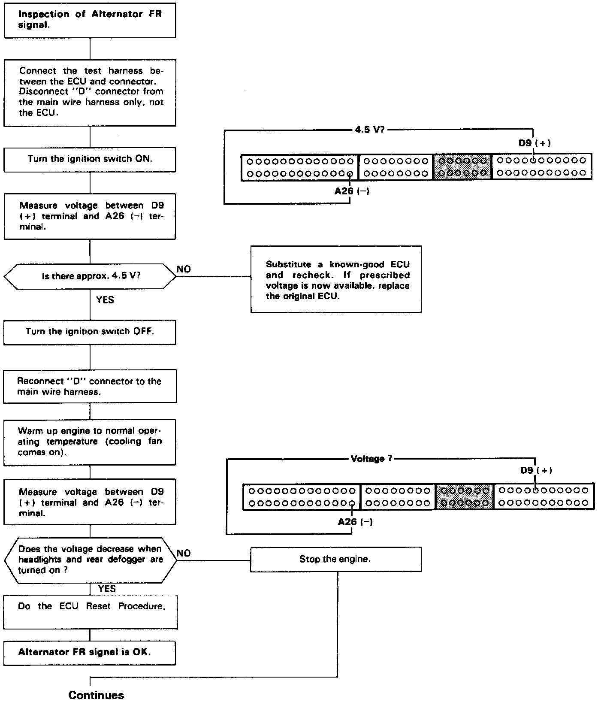
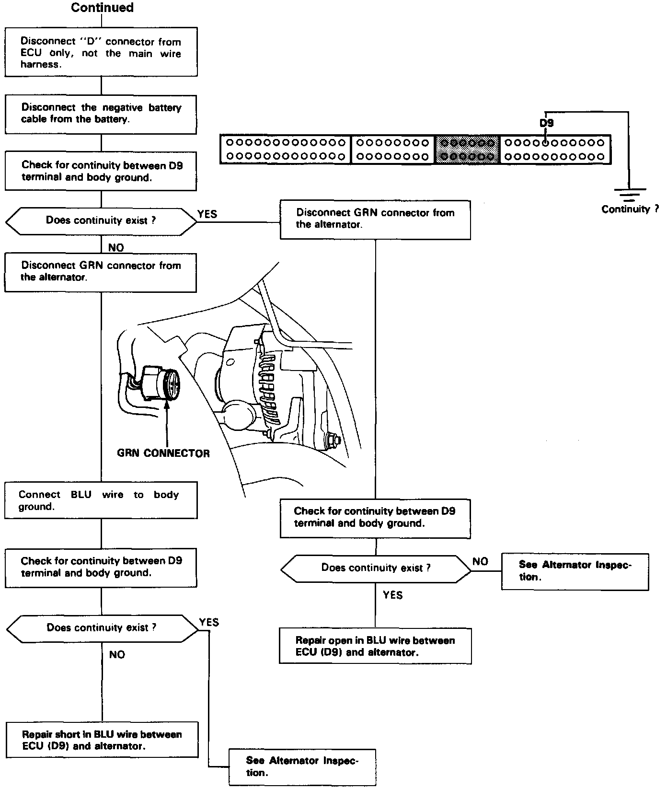

Operation CHARM
: Car repair manuals for everyone.
Home
>>
Acura
>>
1992
>>
Integra L4-1834cc 1.8L DOHC FI
>>
Repair and Diagnosis
>>
Powertrain Management
>>
Computers and Control Systems
>>
Testing and Inspection
>>
Component Tests and General Diagnostics
>>
Alternator FR Signal Circuit Troubleshooting
Alternator FR Signal Circuit Troubleshooting


This signals the
ECU
when the alternator is charging.